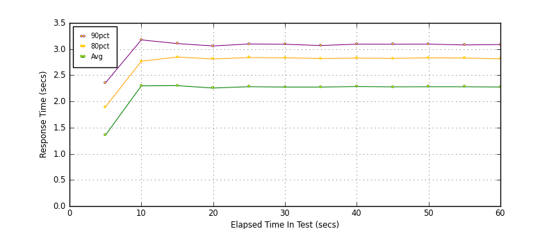
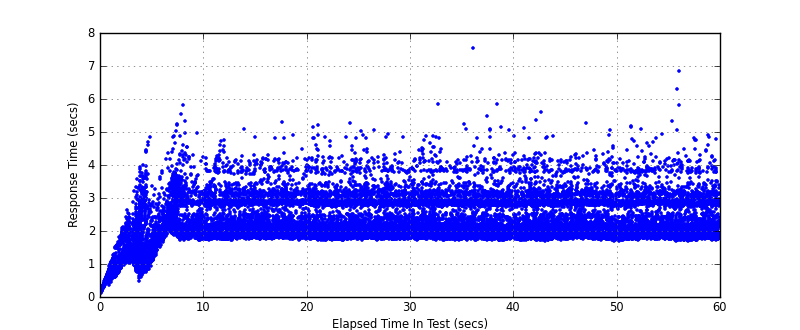
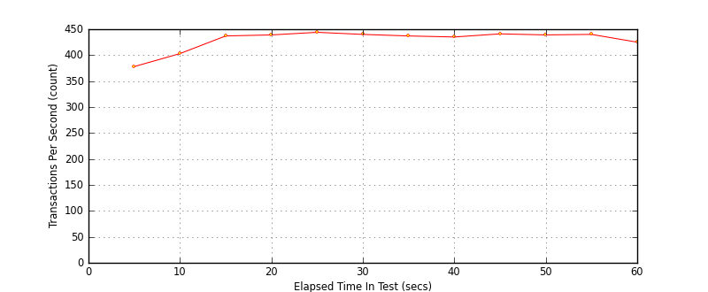

Performance Results Report
Summary
transactions: 26816
errors: 0
run time: 60 secs
rampup: 0 secs
test start: 2017-05-24 18:01:26
test finish: 2017-05-24 18:02:26
time-series interval: 5 secs
workload configuration:
| group name | threads | script name |
|---|
| user_group-21 | 40 | redis_stress.py |
| user_group-20 | 40 | redis_stress.py |
| user_group-23 | 40 | redis_stress.py |
| user_group-22 | 40 | redis_stress.py |
| user_group-25 | 40 | redis_stress.py |
| user_group-24 | 40 | redis_stress.py |
| user_group-2 | 40 | redis_stress.py |
| user_group-3 | 40 | redis_stress.py |
| user_group-1 | 40 | redis_stress.py |
| user_group-6 | 40 | redis_stress.py |
| user_group-7 | 40 | redis_stress.py |
| user_group-4 | 40 | redis_stress.py |
| user_group-5 | 40 | redis_stress.py |
| user_group-8 | 40 | redis_stress.py |
| user_group-9 | 40 | redis_stress.py |
| user_group-10 | 40 | redis_stress.py |
| user_group-11 | 40 | redis_stress.py |
| user_group-12 | 40 | redis_stress.py |
| user_group-13 | 40 | redis_stress.py |
| user_group-14 | 40 | redis_stress.py |
| user_group-15 | 40 | redis_stress.py |
| user_group-16 | 40 | redis_stress.py |
| user_group-17 | 40 | redis_stress.py |
| user_group-18 | 40 | redis_stress.py |
| user_group-19 | 40 | redis_stress.py |
All Transactions
Transaction Response Summary (secs)
| count | min | avg | 80pct | 90pct | 95pct | max | stdev |
|---|
| 26816 | 0.106 | 2.212 | 2.812 | 3.078 | 3.359 | 7.534 | 0.644 |
Interval Details (secs)
| interval | count | rate | min | avg | 80pct | 90pct | 95pct | max | stdev |
|---|
| 1 | 1892 | 378.40 | 0.106 | 1.354 | 1.894 | 2.353 | 2.803 | 4.824 | 0.733 |
| 2 | 2016 | 403.20 | 1.116 | 2.298 | 2.767 | 3.176 | 3.461 | 5.792 | 0.603 |
| 3 | 2188 | 437.60 | 1.704 | 2.302 | 2.848 | 3.105 | 3.402 | 5.084 | 0.579 |
| 4 | 2197 | 439.40 | 1.721 | 2.255 | 2.811 | 3.059 | 3.298 | 5.297 | 0.549 |
| 5 | 2224 | 444.80 | 1.706 | 2.282 | 2.838 | 3.097 | 3.390 | 5.252 | 0.596 |
| 6 | 2200 | 440.00 | 1.707 | 2.275 | 2.834 | 3.092 | 3.342 | 5.035 | 0.573 |
| 7 | 2187 | 437.40 | 1.698 | 2.274 | 2.819 | 3.067 | 3.387 | 5.824 | 0.580 |
| 8 | 2177 | 435.40 | 1.704 | 2.285 | 2.827 | 3.094 | 3.361 | 7.534 | 0.604 |
| 9 | 2206 | 441.20 | 1.685 | 2.279 | 2.821 | 3.093 | 3.461 | 5.601 | 0.597 |
| 10 | 2196 | 439.20 | 1.689 | 2.281 | 2.833 | 3.095 | 3.301 | 5.270 | 0.565 |
| 11 | 2203 | 440.60 | 1.688 | 2.280 | 2.828 | 3.079 | 3.356 | 5.165 | 0.576 |
| 12 | 2129 | 425.80 | 1.690 | 2.275 | 2.813 | 3.087 | 3.399 | 6.823 | 0.606 |
Graphs
Response Time: 5 sec time-series

Response Time: raw data (all points)

Throughput: 5 sec time-series
